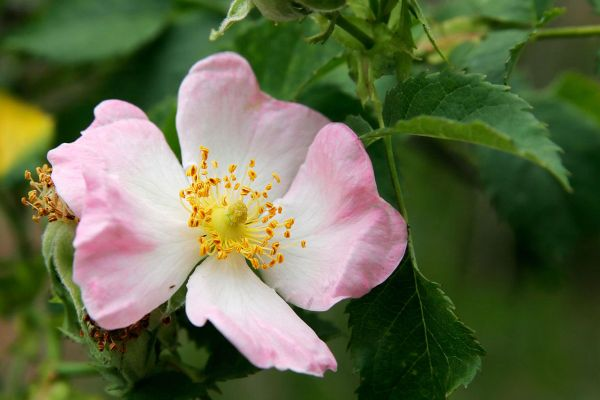
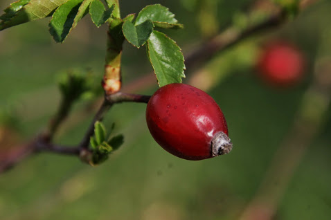

A rózsa jellemzői
A rózsák többsége lombhullató, de néhány (főleg a Délkelet-Ázsiában őshonos) faj örökzöld vagy télizöld.
A levelek összetettek, 5–9 (helyenként akár 3–13) levélkével és pálhával; szélük csipkés, és gyakran apró tüskék találhatóak a szárak alsó részén.
A legtöbb rózsafaj virága öt sziromlevéllel rendelkezik. Kivételt képez az Ázsiában őshonos négyszirmú rózsa (Rosa sericea), amelynek gyakran csak négy sziromlevél alakul ki virágán.
Minden egyes virágszirom két könnyen felismerhető lebenyből áll, amelyek általában fehérek vagy rózsaszínűek, bár néhány faj esetén sárgák vagy pirosak is lehetnek. A sziromlevelek alatt öt csészelevél fedezhető fel (a Rosa sericea esetében négy). Ezek elég nagyok ahhoz, hogy szabad szemmel is már kellő távolságból, felülnézetből észrevehetőek legyenek, s zöld pontocskákként jelennek meg a sziromlevelek között.
A rózsafajok termése aszmagcsoport, amelyet a rózsáknál csipkebogyónak neveznek, és botanikailag áltermés, mert a magok a vacok egy részébe vannak süllyedve (nem csak a termő vesz részt a termésalakításban). A nem telt, szimpla virágú rózsákat általában rovarok porozzák be, hiszen kellemes illatuk vonzza a méheket és egyéb rovarokat.
A fajok többségének termése piros, de néhány (pl. a Rosa pimpinellifolia) sötét-bíbor vagy fekete terméseket hoz. A csipkebogyónak külső húsos rétege van, benne mintegy 5–160 mag is található, melyeket merev, vékony növényi szőrök borítanak.
Csipkebogyó
A csipkebogyótermések nagy része egyes fajok, például a gyepűrózsa (Rosa canina) és a japán rózsa (Rosa rugosa) esetében rendkívül gazdag C-vitaminban, tartalmuk a citroménak tízszerese. A csipkebogyót növényevő-magevő madarak, például a pintyőkék, rigók és a csonttollúak fogyasztják, s ürülékük által kerülnek a magvak ismét a szabadba.
A csipkebogyó sokak által kedvelt és C-vitamin-tartalmáért nagy számban fogyasztott eledel. Gyakran préseléssel és szűréssel ún. csipkebogyószirupot készítenek belőle, mivel a termést körülvevő vékony szőröcskéket meglehetősen kellemetlen elfogyasztani (viszketéshez hasonló érzést keltenek). Így gyógyteák, gyümölcszselék és lekvárok készítéséhez alkalmazzák. A teát és a lekvárt a köznyelvben hecsedlinek, más helyeken petymegnek nevezik.
Csoportosítás díszérték és felhasználás szerint
A rózsákat évezredek óta ültetik díszítő értékük miatt. Nemesítésük is több ezer éve tart, újabb, egyre szebb és ellenállóbb, különböző felhasználási célokra alkalmas növények előállítására. A fajták pontos botanikai besorolása szinte lehetetlen az ismeretlen időkbe visszanyúló származás, a számtalan nehezen követhető keresztezés, és a létrehozott újabb és újabb típusok miatt. Díszértékük mellett biológiai ritmusuk és igényeik is különböznek.
Az alapfajokat nemesített növények alanyaként is használják, pl. a növények szárazságtűrését növelve ezzel, de tájfásításban, szabad területekre, nagy parkokba most is felhasználhatók.
A rózsák esetében a virágok jellemzésére használt kifejezések jelentése:
Csoportok
Parkrózsák és középkori rózsák
Virágaik általában nagyok, teltek, vagy szimplák. A középkori rózsák vagy hagyományos rózsák, történelmi rózsák általában erősen illatosak, de csak egyszer virágoznak a nyár elején. A kínai folytonvirágzó fajok még nem vettek részt ezen rózsák nemesítésében.
Kerti rózsák és virágágyi rózsák (nemes rózsák)
Az ide tartozó fajtatípusok többségét az utóbbi száz évben állították elő, az Európában addig elterjedt egyszer virágzó (középkori) rózsák és a Délkelet-Ázsiából behozott folytonnyíló rózsák többszörös összekeresztezésével. Virágaik teltek és többnyire illatosak. Színskálájuk a hófehértől a sárga és rózsaszínen keresztül a sötétvörösig terjed.
Kúszó rózsák
Virágaik többnyire teltek, a nyár folyamán egyszer vagy többször nyílnak. Általában a folytonvirágzók igényesebbek az egyszer nyílóknál. Önálló kapaszkodásra nem képesek, ezért csak támberendezésre (pergolák, virágágyak, gúlák) futtathatók, de úgy is kötözést igényelnek.
Miniatűr és patio rózsák (babarózsák)
Közös tulajdonságuk a törpe termet (max. 30–40 cm), a gyenge növekedés, finom ág-és levélrendszer és a sok apró, egyszerű vagy féligtelt virág. A miniatűr rózsákat zölddugványról szaporítva többnyire cserepes dísznövényként forgalmazzák.